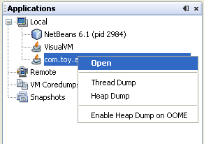
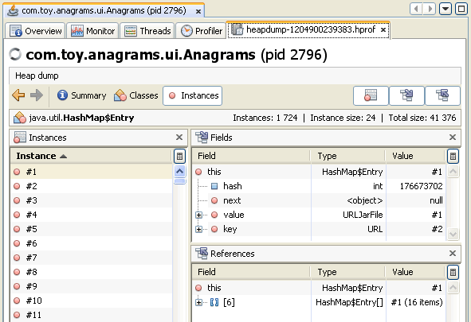
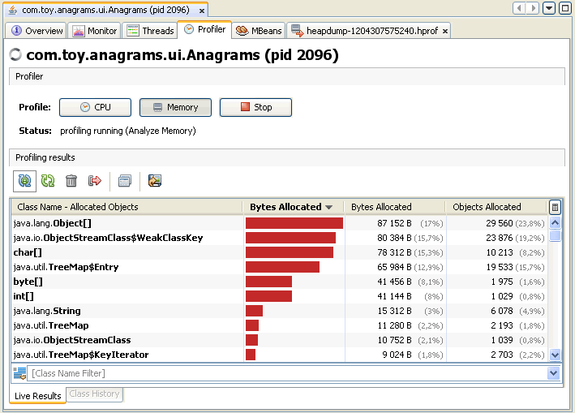
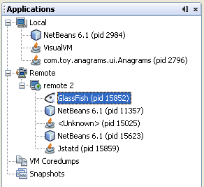
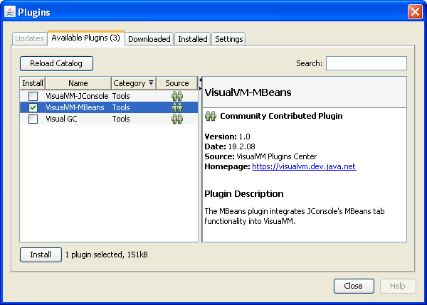

Начало работы с VisualVM (средством VisualVM)
Примечание: эта страница также доступна на японском  ,
упрощённом китайском
,
упрощённом китайском  и
корейском
и
корейском  .
.
VisualVM предоставляет подробные сведения о приложениях Java, пока они выполняются на JVM (Java Virtual Machine, виртуальная машина Java). Графический интерфейс VisualVM позволяет быстро и наглядно просматривать сведения сразу о нескольких приложениях Java.
Это руководство поможет вам быстро приступить к работе с VisualVM. В нём показано, как установить VisualVM и расширить возможности средства, установив подключаемый модуль из центра обновлений VisualVM. Вы узнаете, как запустить VisualVM и какие сведения можно получить о приложении, выполняющемся на локальной и удалённой JVM.
VisualVM в действии
Кратко посмотрите возможности VisualVM в этом видеоролике:
Установка VisualVM
- Загрузите установщик VisualVM со страницы проекта VisualVM.
- Распакуйте установщик VisualVM в пустой каталог на локальном компьютере.
Запуск VisualVM
Чтобы запустить VisualVM в Windows, выполните программу visualvm.exe из папки
\bin каталога установки VisualVM.
В Unix или Linux используйте сценарий оболочки visualvm из папки /bin
каталога установки VisualVM. JDK (Java Development Kit, комплект разработки Java), на котором запускается VisualVM,
и каталог пользователя можно задать параметрами командной строки или изменив файл etc\visualvm.conf.
Пример команды запуска VisualVM в Windows с выбранным JDK и каталогом пользователя:
visualvm.exe --jdkhome "C:\Software\Java\jdk1.6.0" --userdir "C:\Temp\visualvm_userdir"
Работа с окном Applications
При запуске программы открывается главное окно VisualVM. По умолчанию слева в главном окне отображается окно Applications (приложения). В окне Applications можно сразу увидеть приложения Java, выполняющиеся на локальной и удалённых JVM.

Окно Applications — основная точка входа для просмотра подробных сведений о конкретном приложении. Щелчок правой кнопкой по узлу приложения открывает контекстное меню, в котором можно открыть главную вкладку приложения или снять Thread Dump (снимок потоков) либо Heap Dump (снимок кучи).
Подробнее о том, как с помощью окна Applications просматривать и сохранять данные о приложениях, см. на следующих страницах:
- Работа с окном Applications (приложения)
Просмотр Heap Dump
В VisualVM есть визуализатор, с помощью которого удобно просматривать снимки кучи. Можно загрузить уже существующий Heap Dump (снимок кучи) или снять снимок кучи для локальных выполняющихся приложений.
Чтобы снять снимок кучи локального приложения, выполните одно из следующих действий:
- Щёлкните правой кнопкой узел приложения в окне Applications (приложения) и выберите Heap Dump (снимок кучи).
- Дважды щёлкните узел приложения в окне Applications, чтобы открыть вкладку приложения, и нажмите Heap Dump (снимок кучи) на вкладке Monitor (мониторинг).
Чтобы открыть сохранённый снимок кучи, выберите в главном меню File (Файл) > Load (загрузить) и укажите сохранённый файл снимка кучи.
Чтобы просмотреть открытый снимок кучи:
- На панели инструментов Heap Dump нажмите Classes (классы), чтобы увидеть список живых классов и соответствующих экземпляров.
- Дважды щёлкните имя класса, чтобы открыть представление Instances (экземпляры) со списком экземпляров.
- Выберите экземпляр в списке, чтобы увидеть ссылки на этот экземпляр.

Когда вы снимаете снимок кучи, VisualVM открывает его на новой вкладке и создаёт узел снимка кучи под узлом приложения в окне Applications (приложения). Чтобы сохранить созданный снимок кучи, щёлкните правой кнопкой узел снимка кучи и выберите Save As (сохранить как). Если созданный снимок кучи явно не сохранить, он будет удалён при закрытии приложения.
Дополнительные сведения см. в следующем документе:
- Просмотр Heap Dump (снимка кучи)
Профилирование приложения
В VisualVM есть Profiler (профилировщик), с помощью которого можно профилировать приложения, выполняющиеся на локальной JVM.
Элементы управления профилированием находятся на вкладке Profiler (профилировщик) вкладки приложения.
Профилировщик позволяет анализировать использование памяти и производительность CPU (процессора) локальных приложений.
Примечание. Чтобы профилировать приложение, выполняющееся на JDK 6, нужно отключить совместное использование классов для этого приложения, иначе приложение может аварийно завершиться.
Чтобы отключить совместное использование классов, запускайте приложение с аргументом -Xshare:off.
- Запустите локальное приложение Java. (Запускайте приложение с аргументом -Xshare:off.)
- Под узлом Local (локальные) в окне Applications (приложения) щёлкните правой кнопкой узел приложения и выберите Open (открыть), чтобы открыть вкладку приложения.
- Откройте вкладку Profiler (профилировщик) на вкладке приложения.
- На вкладке Profiler нажмите Memory (память) или CPU (процессор).
Когда вы выбираете задачу профилирования, VisualVM отображает данные профилирования на вкладке Profiler.

Подробнее о профилировании в VisualVM см. в следующем документе:
Подключение к удалённому узлу
VisualVM позволяет удобно наблюдать за приложениями на удалённых узлах и просматривать общие сведения об удалённой системе. Чтобы увидеть сведения о приложениях на удалённых узлах, сначала нужно подключиться к удалённому узлу. Подключённые удалённые узлы перечислены под узлом Remote (удалённые) в окне Applications (приложения). Разверните узел удалённого хоста, чтобы увидеть приложения, выполняющиеся на этом хосте.
Чтобы получать данные от удалённого приложения, на удалённой JVM должна быть запущена утилита jstatd. Подробнее о запуске jstatd см. jstatd - Virtual Machine jstat Daemon. Профилировать приложения, выполняющиеся на удалённом узле, нельзя.
- Щёлкните правой кнопкой Remote (удалённые) в окне Applications (приложения) и выберите Add Remote Host (добавить удалённый узел).
- В диалоговом окне Add Remote Host (добавить удалённый узел) введите имя хоста или IP-адрес удалённой машины.
- (Необязательно) Введите отображаемое имя удалённого узла. Это имя показывается в окне Applications. Если отображаемое имя не задано, для обозначения удалённого узла в окне Applications используется имя хоста.
- Нажмите OK.
После нажатия OK под узлом Remote появляется узел удалённого хоста. Разверните узел удалённого хоста, чтобы увидеть приложения Java, выполняющиеся на этом хосте.
Дважды щёлкните имя удалённого приложения, чтобы открыть вкладку приложения в VisualVM.

Дополнительные сведения см. в следующем документе:
Установка модулей VisualVM
Возможности VisualVM можно расширить, установив модули из центра обновлений VisualVM. Например, установка модуля VisualVM-MBeans добавляет на вкладку приложения вкладку MBeans (управляемые компоненты), с которой можно наблюдать за MBeans и управлять ими прямо из VisualVM.
Чтобы установить модуль VisualVM:
- В главном меню выберите Tools (Сервис) > Plugins (модули).
- На вкладке Available Plugins (доступные модули) отметьте флажок Install (установить) у нужного модуля. Нажмите Install (установить).
- Пройдите шаги мастера установки модуля и завершите установку.

Снимок диспетчера модулей с выбранным модулем VisualVM-MBeans.
Дополнительная документация VisualVM
В этом документе представлены некоторые возможности VisualVM. VisualVM задуман как наглядный интерфейс, с помощью которого удобно изучать сведения о приложениях Java на локальных и удалённых JVM. Более подробные сведения о работе с возможностями VisualVM см. в следующих документах: